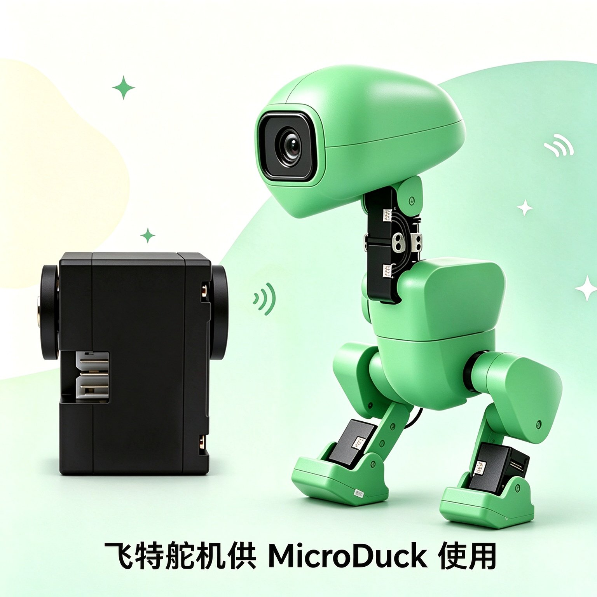
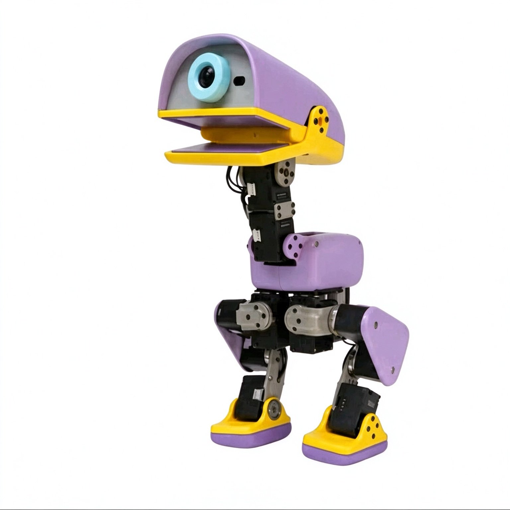
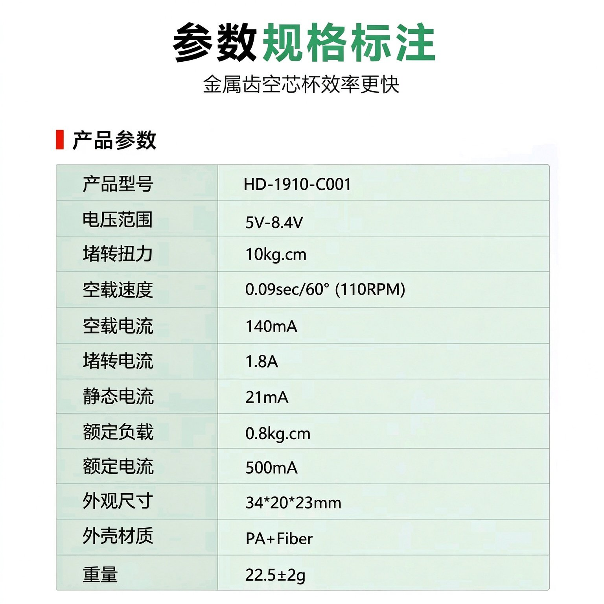
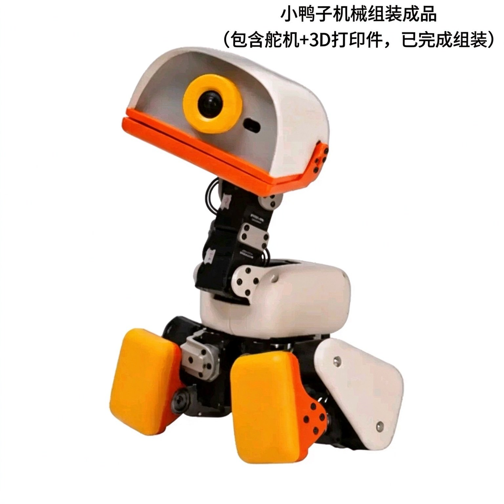

COLORS
多款配色 · 随心选择





15 自由度（腿 5×2 + 头颈 4 + 鸭嘴 1），50Hz 板载策略环，预置行走、踢球、喙部抓取等 7 套行为，摔倒自主起身。
结构件 + 电子件 + 舵机 + 主控 + 电池全配齐，3D 打印图纸与 BOM 全量开源，中英双语组装教程，自己动手造一只。
MuJoCo 仿真 + PPO 训练，导出 ONNX 部署到真机。仿真到现实迁移工具链完整开放，动作策略可重训。
Rust 守护进程架构、Python / JavaScript 编程自定义行为，国产舵机平替 + 低成本，个人开发者也能上手。
| 整机尺寸 | 高 25cm · 宽 14cm · 重约 800g（≤1kg） |
| 自由度 | 15 DOF（腿部 5×2 + 头颈 4 + 鸭嘴 1） |
| 舵机 | 15 × 国产平替舵机（Feetech 同款） |
| 主控 | 瑞芯微 RK3566（四核 Cortex-A55 · 0.8 TOPS NPU） |
| 内存 / 存储 | 1GB RAM + 32GB eMMC |
| 感知 | 广角摄像头 · 8×8 ToF 深度 · 双 IMU · 麦克风 · 扬声器 · NFC |
| 通信 | Wi-Fi · 蓝牙 · NFC |
| 电池 | 18650 可拆卸电池组，续航约 1 小时 |
| 控制 | 50Hz 板载策略环 · RL 训练基于 MuJoCo / PPO |
| 结构件 | 3D 打印（FDM / 光固化）+ 钣金件，图纸全开源 |
| 预置行为 | 行走 · 坐立 · 下蹲 · 踢球 · 喙部抓取 · 轮滑 · 摔倒起身 |
不是买一台只会循环播放动作的玩具，而是一台可以继续做实验、继续二创的开源双足机器人平台。
3D 打印结构件、电子件、15 颗舵机、RK3566 主控、电池组一应俱全，按 BOM 清单核对，开箱即可组装。
从打印到组装、从烧录到首跑，分步图解教程；公差与干涉问题清单全量公开，复现成功率有保障。
在 MuJoCo 仿真里用 PPO 训练新步态、新动作，导出 ONNX 部署真机——把你的想法教给这只鸭子。




低成本上手强化学习与具身智能，训练属于自己的动作策略。
散件组装 + 开源教程，把机器人拆开讲透，边做边学。
仿真到现实迁移、步态控制、域随机化等方向的低成本实验平台。
开源生态二创、技能包开发、高校竞赛与社团活动载体。
Rust 编写的 7 守护进程架构，robotd 50Hz 电机控制循环 + 安全护栏，各进程经 JSON-RPC 2.0 通信。
MuJoCo 仿真 + PPO 强化学习，域随机化仿真建模，训练策略导出 ONNX 部署真机。
硬件图纸 / PCB / BOM 走 CERN-OHL-S，软件栈与训练环境走 Apache-2.0，教程文档 CC BY-SA。